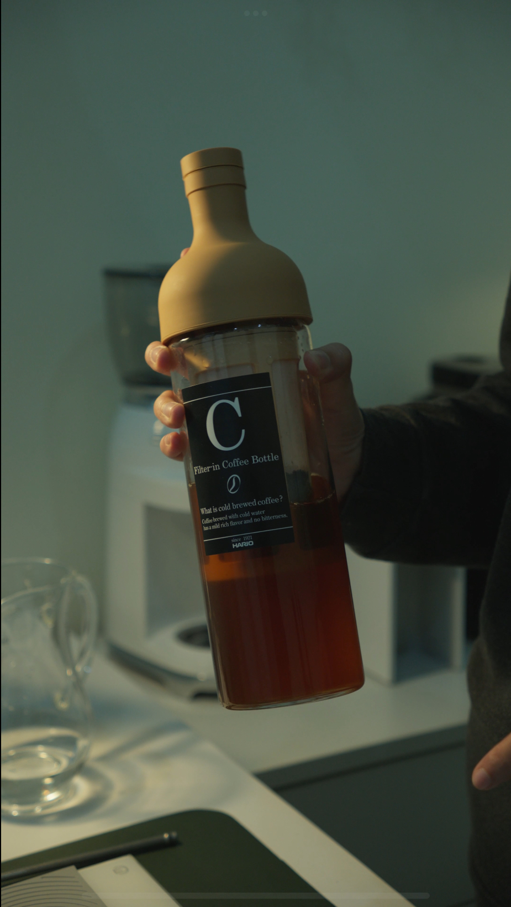

Cold Brew
Video ini menampilkan proses pembuatan cold brew yang sederhana namun menghasilkan kopi dengan rasa yang smooth, less acidic, dan menyegarkan — cocok untuk dinikmati saat cuaca panas atau sebagai minuman harian yang ringan.
Hot Chocolate

Video ini dibuat dalam kolaborasi dengan Chefmate, menampilkan resep hot chocolate yang sederhana namun menghasilkan minuman yang rich, kental, dan comforting — cocok untuk dinikmati di waktu santai.
Cold Whisk Matcha

Dalam video ini, saya menggunakan teknik cold whisk untuk menyeduh matcha tanpa air panas. Hasilnya adalah minuman matcha yang lebih halus, tidak terlalu pahit, dan lebih menonjolkan notes alami dari bubuk matcha berkualitas.
Car Game

Game ini adalah game sederhana yang saya buat untuk mengerjakan tugas akhir (ALP) mata kuliah Object Oriented Programming.
Space Shooter

Game ini adalah game sederhana yang saya buat menggunakan pygame. Dengan mengikuti tutorial di YouTube, tujuan pembuatan game ini adalah untuk mempelajari tentang pygame lebih dalam.
Weather App UI

UI Weather App ini adalah desain antarmuka pengguna untuk aplikasi cuaca yang saya buat menggunakan Swift UI. Karena hanya UI, app ini belum terhubung ke API manapun.